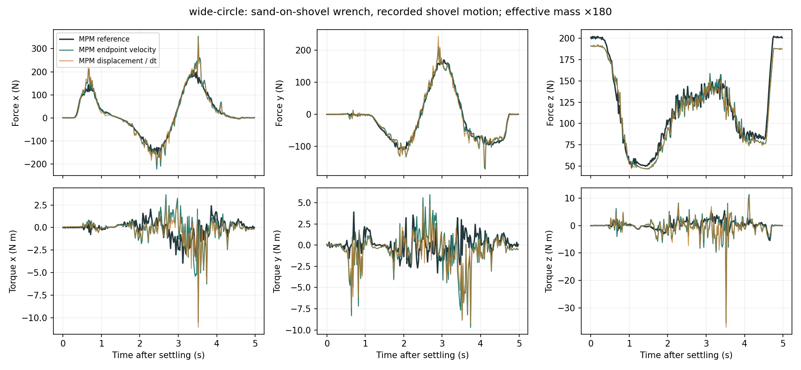
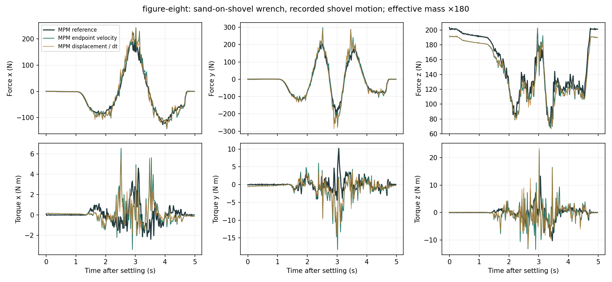
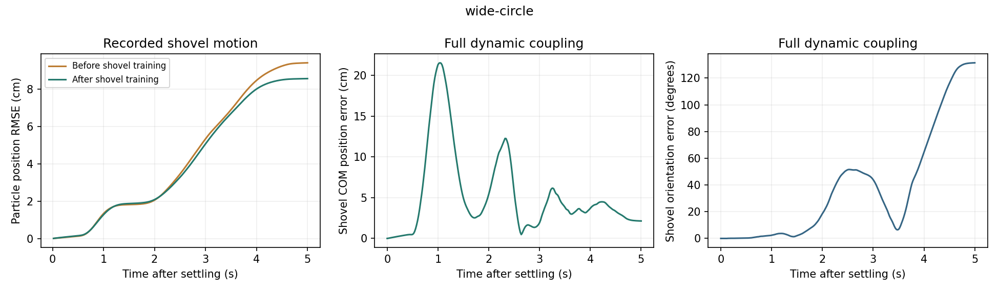
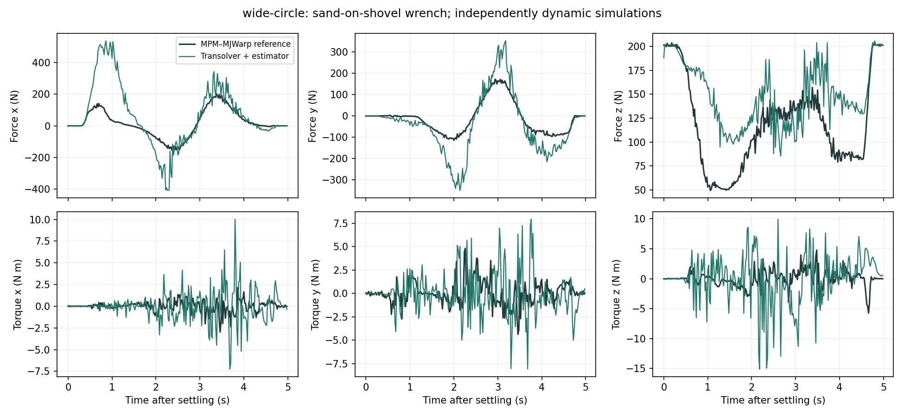
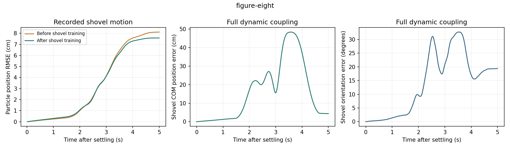
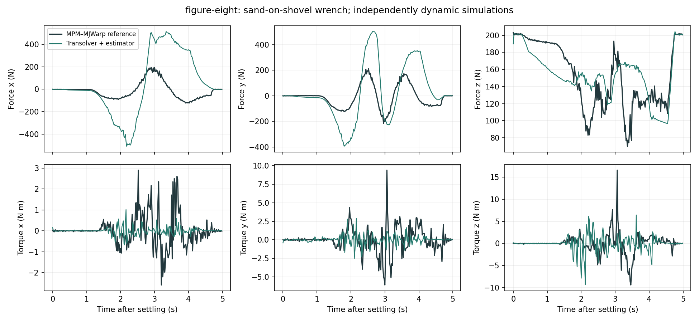

SHOVEL / PARTICLE MOTION AND CONTACT WRENCH
Extend the particle model to a concave shovel
Learn particle displacement around the reference Newton shovel, then couple predicted particle motion to an independently dynamic shovel.
01 / Simulation setup
| Quantity | Setting |
|---|---|
| Shovel | Newton moving-terrain shovel asset: curved blade, steel neck, wooden handle |
| Blade dimensions | 0.60 m long × up to 0.32 m wide; 0.014 m thick |
| Shovel mass | 20.506 kg; full inertia tensor retained; body origin at its center of mass |
| Collision representation | 64 blade prisms, neck and handle. Separate pieces preserve the empty bowl. The neck uses a 48-sided mesh approximation of the reference cylinder. |
| Material | Sand: density 1,600 kg/m³, friction 0.48, Young's modulus 10¹⁵ Pa, compression yield pressure 10¹⁵ Pa, no tensile or shear cohesion |
| Initial sand volume | 1.0 × 1.0 × 0.5 m, on fixed rigid ground; no enclosing walls |
| Resolution | 0.04 m MPM grid; 16,384 particles, jittered initial positions; 0.012 m display radius |
| Reference integration | MPM–MJWarp, 0.005 s timestep; up to 25 MPM solver iterations |
| Learned integration | Particle displacement at 0.02 s intervals; four 0.005 s MJWarp rigid substeps |
| Contact estimator | Finite material-velocity response, effective mass multiplier ×180; no force network |
The shovel geometry comes from newton/examples/mpm_moving_patch_beta/impl/shovel.py. This benchmark uses a fixed open sand bed, not the moving-patch terrain from that example.
02 / Geometry and model inputs
Material parameters
+ weighted collider embeddings
Per-particle displacement
At each material particle, evaluate the shovel's signed distance, outward normal and local surface velocity. Encode these features using the same collider encoder as the fixed rigid ground. The shovel SDF is sampled at 0.005 m spacing from the union of its separate collision pieces. It is queried on the GPU; feature derivatives are available during recurrent training. Particle velocity is displacement divided by the 0.02 s interval.
03 / Two evaluation modes
Recorded shovel trajectory
Initialize particles once. Supply the recorded MPM–MJWarp shovel pose and velocity at every step. Predict particles recurrently for five seconds. This isolates particle-model error under prescribed input motion.
Fully dynamic shovel
Initialize particles and shovel once. Predict particles → estimate contact wrench → apply wrench and external dragging force to MJWarp → use the updated shovel state in the next particle prediction. No MPM runs on the learned side.
The reference shovel is dynamic during data collection. A bounded external force moves it toward a drag target; its position is not overwritten. Reference and learned closed-loop simulations receive the same target, but their forces depend on their own shovel motion.
04 / Recorded reference motion
These videos show actual MPM particles and the dynamic MJWarp shovel. They are reference simulations, not learned predictions.
Circular dragging
Five seconds after the shovel settles. The force target follows the named path; the shovel is free to deviate.
Figure-eight dragging
Five seconds after the shovel settles. The force target follows the named path; the shovel is free to deviate.
05 / Training and verification
| Item | Setting / measured result |
|---|---|
| Dataset | 128 dynamic shovel episodes: 99 train, 16 validation, 13 test; disjoint episode splits |
| Collection | 16 L40S workers; randomized initial motion, pushes and continuous dragging |
| Network | Transolver: 128 hidden channels, 4 layers, 4 attention heads, 64 slices; three position frames |
| Training | Box-weight initialization; 1,000 updates on 4 L40S GPUs; 25-step (0.5 s) recurrent loss, balanced moving/stationary particle supervision |
| Checkpoint selection | Step 1,000: 0.5 s validation particle RMSE 0.93 cm; moving 2.03 cm, stationary 1.03 mm; frozen-particle baseline 5.20 cm |
| Full 5 s validation | Mean final particle RMSE over 16 episodes: 4.78 cm; frozen particles: 5.59 cm |
| Full 5 s test | Mean final particle RMSE over 13 episodes: 5.39 cm; frozen particles: 6.57 cm; worst episode: 11.93 cm |
The 29 held-out rollouts use recorded shovel motion and recurrent particle predictions throughout five seconds. All completed with finite particle states. Short-horizon validation and five-second final error measure different quantities; they should not be compared directly.
Completed collection workflow · Completed training workflow · Training and split measurements
The imported collection asset matches the reference mass, center of mass and full inertia tensor. A geometry test confirms that points above the curved blade remain outside the shovel and that SDF-feature gradients agree with finite differences. All nine geometry, particle-model and GPU-interface tests pass, including momentum conservation and Coulomb friction at both contact update sizes. Both final dynamic comparisons complete all 250 particle steps with converged contact solves. Repository formatting and lint pass for the changed contact code; the full hook still reports pre-existing changelog errors in unrelated packages.
06 / Contact estimation with reference particles
Both inputs use recorded MPM particle positions and recorded shovel states. The estimator receives either the next MPM particle velocity or the MPM displacement divided by 0.02 s. This test isolates contact estimation; it does not use a trained shovel model or feed forces back into the reference simulation.
| Motion | Particle velocity input | Force RMS error (N) | Torque RMS error (N m) | Converged solves |
|---|---|---|---|---|
| wide-circle | MPM endpoint velocity | 29.8 | 4.76 | 100% |
| wide-circle | MPM displacement / dt | 28.5 | 4.39 | 100% |
| figure-eight | MPM endpoint velocity | 32.1 | 5.37 | 100% |
| figure-eight | MPM displacement / dt | 32.1 | 4.82 | 100% |
Reference: sand-on-shovel MPM force and torque, averaged over matching 0.02 s intervals. Torque is expressed about the shovel center of mass at the start of each interval. All 1,000 solves converged. Estimated pre-drag support is approximately 191 N; MPM gives 201 N. The finite-response approximation still contributes error, especially to torque; accurate particle motion alone does not guarantee an exact contact wrench.
wide-circle

figure-eight

Numerical results · Effective mass multiplier 180; 2,000 maximum contact iterations; tolerance 10⁻⁹; friction 0.5.
07 / Trained particle prediction and dynamic coupling
All comparisons run for five seconds from a shared initial particle state. Recorded-motion tests receive the reference shovel trajectory at every step. Dynamic tests receive only an external drag target and simulate their own shovel motion. The network predicts every particle; no region selector or MPM update is used on the learned side.
| Motion | Particle final RMSE before fine-tuning | Particle final RMSE after fine-tuning | Dynamic shovel COM position RMS error | Dynamic shovel orientation RMS error |
|---|---|---|---|---|
| wide-circle | 9.41 cm | 8.57 cm | 7.46 cm | 56.1° |
| figure-eight | 8.11 cm | 7.57 cm | 22.51 cm | 17.8° |
Result: shovel fine-tuning reduces recorded-motion particle error modestly. Fully dynamic motion is not yet accurate: the circle has approximately 56° orientation RMS error, and the figure eight has 22.5 cm COM position RMS error. Numerical convergence alone does not establish force or trajectory accuracy.
Particle errors are evaluated at the final frame, conditioned on recorded shovel motion. Shovel pose errors are measured over the entire independently dynamic rollout. These quantities are not the 0.5-second validation error used to select the checkpoint.
Contact-solver stability
The original parallel contact iteration diverged at 2.94 s in the figure-eight run with 152 active contacts, while particle predictions and the previous shovel state remained finite. Reducing the Jacobi impulse update factor from 0.1 to 0.025 eliminates that numerical failure in both final five-second runs. This is numerical relaxation within each timestep; forces are not averaged across time. Effective material mass remains ×180 and the auxiliary velocity response remains enabled.
The final dynamic runs use a 10,000-iteration limit and residual tolerance 10⁻⁹. Actual iterations: circle median 1,394, maximum 2,107; figure eight median 1,856, maximum 2,110. Every solve converged. This higher iteration count has a runtime cost; these runs evaluate accuracy, not real-time performance. Section 06 retains its original 0.1-update reference-particle benchmark, which converged without this change.
wide-circle / Recorded shovel trajectory
Left: MPM particles. Right: recurrent Transolver particles. Both views use the same recorded shovel motion.
wide-circle / Full dynamic coupling
Left: MPM–MJWarp. Right: Transolver + contact estimator + MJWarp, effective mass multiplier ×180. Each shovel responds to its own material wrench and external dragging force.


figure-eight / Recorded shovel trajectory
Left: MPM particles. Right: recurrent Transolver particles. Both views use the same recorded shovel motion.
figure-eight / Full dynamic coupling
Left: MPM–MJWarp. Right: Transolver + contact estimator + MJWarp, effective mass multiplier ×180. Each shovel responds to its own material wrench and external dragging force.


Dynamic wrench curves compare material force and torque received by two independently simulated shovels. Their states diverge, so this difference combines particle prediction, contact estimation and accumulated motion errors. It is not the same-state estimator error reported in Section 06.